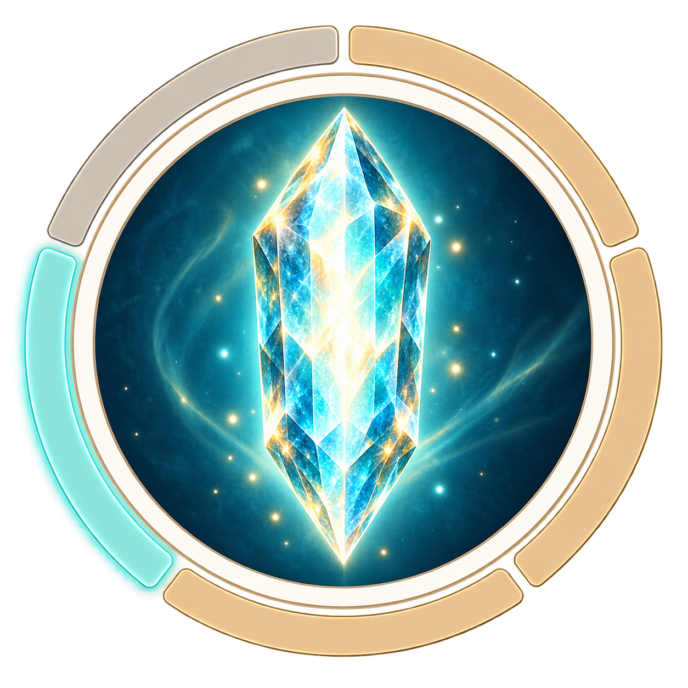

DRC · Crystal logo
The original concept shown at native display sizes. This page also uses it as its browser favicon—open the page in a browser to inspect the real tab.
Light background

192 · App icon
64
32
16 · Favicon
Dark background
192 · App icon
64
32
16 · Favicon
In context
Daily Recovery Coach ×
Daily Recovery CoachYour daily recovery guidance
Design direction: keep the full emblem for project artwork and larger app placements. For a dedicated favicon, explore a larger crystal silhouette with fewer facets and a simpler rim, retaining the cyan, teal and gold palette.